flowchart LR
A[Fluid Dynamics] --> B[Compressible]
A --> C[Incompressible]
B --> D[Non-viscous fluid]
B --> E[Newtonian fluid]
C --> F[Non-Newtonian fluid]
C --> E
Chapter 5 Mechanics of Incompressible Newtonian Fluids
Fluid dynamics is concerned with the study of fluids in motion. More specifically, it concerns
Kinematics of the flow field.
Stress distribution throughout the field.
It is convenient to broadly classify fluid dynamics on the basis of constitutive equations for the fluid and in terms of compressibility of the fluid.
For example, the subject dealing with incompressible Newtonian fluids is referred to as fluid dynamics for incompressible Newtonian fluids.
TipRemarks
For most problems, liquids can be treated as incompressible fluids and, in general, gases (except for low-speed gas flows) must be considered as compressible.
Many common fluids such as air and water can be modelled as Newtonian fluids.
5.1 Governing Equations — Derivation of the Navier–Stokes Equations
The equations governing the flow of an incompressible Newtonian fluid consist of the equations of motion
\[ \frac{\partial \sigma_{ji}}{\partial x_j} +\rho X_i = \rho\frac{Dv_i}{Dt}, \tag{1}\]
the continuity equation
\[ \operatorname{div}(\mathbf{v}) = \frac{\partial v_j}{\partial x_j} = 0, \tag{2}\]
and the constitutive equations
\[ \sigma_{ij} = -p\delta_{ij} + 2\mu d_{ij}, \tag{3}\]
where
\[ \frac{Dv_i}{Dt} = \frac{\partial v_i}{\partial t} + v_j\frac{\partial v_i}{\partial x_j} = a_i, \]
while \(d_{ij}\) is the rate of deformation (also known as the strain-rate tensor), which is related to the velocity field by
\[ d_{ij} = \frac12 \left( \frac{\partial v_i}{\partial x_j} + \frac{\partial v_j}{\partial x_i} \right). \]
The above equations are field equations which must be satisfied at every point within the continuum.
Substituting (3) into (1) gives
\[ \rho\frac{Dv_i}{Dt} = -\frac{\partial p}{\partial x_i} + \rho X_i + \mu \left( \frac{\partial^2v_i}{\partial x_j\partial x_j} + \frac{\partial^2v_j}{\partial x_i\partial x_j} \right). \tag{4}\]
Using (2), we have
\[ \frac{\partial v_j}{\partial x_j}=0, \]
hence
\[ \frac{\partial^2v_j} {\partial x_i\partial x_j} = 0. \]
Therefore (4) reduces to
\[ \rho\frac{Dv_i}{Dt} = -\frac{\partial p}{\partial x_i} + \rho X_i + \mu\nabla^2v_i, \tag{5}\]
which are the Navier–Stokes equations for incompressible Newtonian fluids.
Written in expanded form,
\[ \begin{aligned} \rho\frac{Du}{Dt} &= -\frac{\partial p}{\partial x} +\rho X +\mu\nabla^2u, \\ \rho\frac{Dv}{Dt} &= -\frac{\partial p}{\partial y} +\rho Y +\mu\nabla^2v, \\ \rho\frac{Dw}{Dt} &= -\frac{\partial p}{\partial z} +\rho Z +\mu\nabla^2w. \end{aligned} \tag{6}\]
TipRemarks
The Navier–Stokes equations for other classes of fluids can be derived using the same procedure but with different constitutive equations.
The Navier–Stokes equations (5), together with the continuity equation (2), constitute a system of four partial differential equations for the four unknown variables \(u\), \(v\), \(w\), and \(p\). Hence, in principle, the system is solvable.
These equations describe all possible motions of an incompressible Newtonian fluid. The distinguishing feature between different flow situations lies in the boundary conditions imposed on the velocity field and pressure.
5.2 Boundary Conditions at a Solid–Fluid Interface
Here we consider the cases where fluids adhere to rigid, but possibly moving, surfaces bounding the fluid.
Normal component of fluid velocity
At a rigid surface, the normal component of the fluid velocity must be identical to that of the solid surface, since the fluid cannot penetrate the solid.
Tangential component of fluid velocity
Two different boundary conditions may be used for the tangential velocity components.
Assume that the tangential velocity component is the same as that of the rigid surface. This is known as the no-slip condition.
Assume that slip may occur between the fluid and the rigid surface. This is known as the slip condition.
Experimental observations on most engineering materials show that the no-slip condition is valid. However, recent studies indicate that slip may occur at fluid–solid interfaces on the microscale.
5.3 Some Solutions of the Navier–Stokes Equations
In principle, the Navier–Stokes equations together with the continuity equation can be solved to yield an exact solution for any flow of a Newtonian fluid. However, it is generally very difficult to obtain an exact solution to the Navier–Stokes equations for a given problem, except in certain simple cases.
Example 1: Steady Flow Between Parallel Plates
Consider an incompressible Newtonian fluid located between two infinite parallel plates. Let the lower plate be fixed and the upper plate move with a constant velocity \(U\).
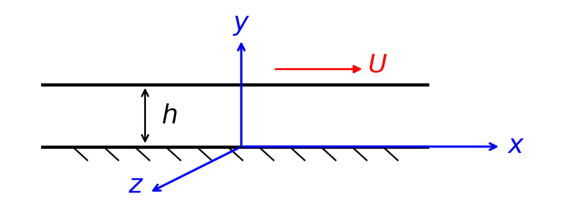
Assume that the only body forces are due to gravity and that the motion of the fluid is caused entirely by the movement of the upper plate. Hence, \(\frac{\partial p}{\partial x}=0.\)
Determine (a) the velocity field, (b) the pressure distribution, and (c) the stress components in the fluid.
(a) Velocity field
The governing field equations are the Navier–Stokes equations and the continuity equation. In Cartesian coordinates, they are
\[ \begin{aligned} \frac{Du}{Dt} &= -\frac{1}{\rho}\frac{\partial p}{\partial x} +X +\frac{\mu}{\rho}\nabla^2u, \\ \frac{Dv}{Dt} &= -\frac{1}{\rho}\frac{\partial p}{\partial y} +Y +\frac{\mu}{\rho}\nabla^2v, \\ \frac{Dw}{Dt} &= -\frac{1}{\rho}\frac{\partial p}{\partial z} +Z +\frac{\mu}{\rho}\nabla^2w, \\ &\frac{\partial u}{\partial x} + \frac{\partial v}{\partial y} + \frac{\partial w}{\partial z} =0. \end{aligned} \]
The no-slip boundary conditions are
\[ u=0 \quad\text{at}\quad y=0, \qquad u=U \quad\text{at}\quad y=h. \tag{7}\]
The other prescribed conditions are
\[ \frac{\partial p}{\partial x}=0, \qquad X=0, \qquad Y=-g, \qquad Z=0. \tag{8}\]
Since the plates are infinite and parallel, it is assumed that the only nonzero velocity component is in the \(x\)-direction. Therefore, \(v=w=0.\)
Substituting \(v=w=0\) into the continuity equation gives
\[ \frac{\partial u}{\partial x}=0 \quad\Longrightarrow\quad u=u(y,z,t). \]
The flow is steady, so \(\frac{\partial u}{\partial t}=0.\) Since the plates are infinite and there is no variation in the \(z\)-direction, \(\frac{\partial u}{\partial z}=0.\) Therefore, the velocity has the form
\[ u=u(y). \]
For this velocity field, the material acceleration is zero:
\[ \frac{Du}{Dt} = \frac{\partial u}{\partial t} + u\frac{\partial u}{\partial x} + v\frac{\partial u}{\partial y} + w\frac{\partial u}{\partial z} = 0. \]
Substituting \(u=u(y),\, v=w=0\) into the Navier–Stokes equations gives
\[ \frac{\mu}{\rho}\frac{\partial^2u}{\partial y^2} =0, \quad -\frac{1}{\rho}\frac{\partial p}{\partial y}-g =0, \quad -\frac{1}{\rho}\frac{\partial p}{\partial z} =0. \]
Equivalently,
\[ \frac{\partial^2u}{\partial y^2}=0, \quad -\frac{1}{\rho}\frac{\partial p}{\partial y}-g=0, \quad \frac{\partial p}{\partial z}=0. \tag{9}\]
From (9) \(_1\), integrating twice with respect to \(y\),
\[ \frac{\partial u}{\partial y}=A \;\;\Longrightarrow\;\; u=Ay+B, \quad A,B\in\mathbb{R}. \]
Using the boundary conditions, (7),
\[ u(0)=0 \; \Longrightarrow\; B=0, \quad u(h)=U \; \Longrightarrow\; Ah=U. \]
Therefore, the velocity distribution is
\[ u(y)=\frac{U}{h}y, \quad v=0, \quad w=0. \tag{10}\]
Thus, the velocity varies linearly from zero at the fixed lower plate to \(U\) at the moving upper plate. In vector form,
\[ \mathbf{v} = \left( \frac{Uy}{h},\,0,\,0 \right). \]
(b) Pressure distribution
From the \(y\)-direction Navier–Stokes equation,
\[ \begin{aligned} -\frac{1}{\rho}\frac{\partial p}{\partial y}-g&=0\\ \frac{\partial p}{\partial y}&=-\rho g. \end{aligned} \]
Since \(\frac{\partial p}{\partial x}=0\) and \(\frac{\partial p}{\partial z}=0,\) the pressure depends only on \(y\):
\[ p=p(y). \]
Integrating,
\[ p(y)=-\rho gy+C, \quad C\in\mathbb{R}. \]
If the pressure is \(p_0\) at \(y=0\), then \(C=p_0\), and consequently
\[ p(y)=p_0-\rho gy. \]
Thus, the pressure distribution is hydrostatic1.
(c) Stress components
For an incompressible Newtonian fluid, the constitutive equation is
\[ \sigma_{ij} = -p\delta_{ij} + \mu \left( \frac{\partial v_i}{\partial x_j} + \frac{\partial v_j}{\partial x_i} \right). \tag{11}\]
For the velocity field in (10) the only nonzero velocity derivative is \(\frac{\partial u}{\partial y}=\frac{U}{h}.\)
The normal stress components are therefore
\[ \begin{aligned} \sigma_{xx} &= -p + 2\mu\frac{\partial u}{\partial x} = -p,\\ \sigma_{yy} &= -p + 2\mu\frac{\partial v}{\partial y} = -p,\\ \sigma_{zz} &= -p + 2\mu\frac{\partial w}{\partial z} = -p. \end{aligned} \]
The \(xy\)-shear stress is
\[ \sigma_{xy} = \mu \left( \frac{\partial u}{\partial y} + \frac{\partial v}{\partial x} \right) = \mu\frac{U}{h}. \]
By symmetry of the stress tensor,
\[ \sigma_{yx}=\sigma_{xy} = \mu\frac{U}{h}. \]
The remaining shear stresses are
\[ \sigma_{yz} = \mu \left( \frac{\partial v}{\partial z} + \frac{\partial w}{\partial y} \right) = 0, \]
\[ \sigma_{zx} = \mu \left( \frac{\partial w}{\partial x} + \frac{\partial u}{\partial z} \right) = 0. \]
The complete stress tensor is therefore
\[ \boldsymbol{\sigma} = \begin{pmatrix} -p & \displaystyle\mu\frac{U}{h} & 0\\ \displaystyle\mu\frac{U}{h} & -p & 0\\ 0 & 0 & -p \end{pmatrix}, \]
where
\[ p(y)=p_0-\rho gy. \]
This flow is commonly known as plane Couette flow2.
Example 2: Steady Flow Through a Straight Circular Tube of Constant Cross-Section
Consider the steady flow of an incompressible Newtonian fluid through a horizontal circular tube of radius \(a\). Assume that the flow is parallel to the tube wall.
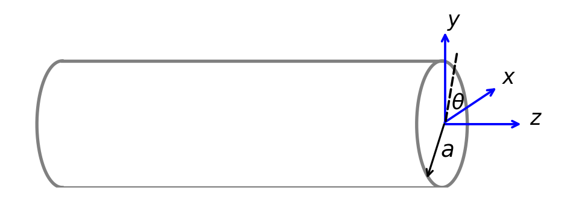
Determine (a) the pressure distribution, (b) the velocity field, (c) the volume flow rate, and (d) the mean velocity.
(a) Pressure distribution
Let the axis of the tube be aligned with the \(z\)-direction. Since the flow is parallel to the tube wall, the velocity components in the \(x\)- and \(y\)-directions vanish:
\[ u=v=0. \tag{12}\]
The velocity field therefore has the form \(\mathbf{v}=(0,0,w).\)
Substitute (12) into the continuity equation,
\[ \frac{\partial u}{\partial x} + \frac{\partial v}{\partial y} + \frac{\partial w}{\partial z} = 0. \; \Longrightarrow \; \frac{\partial w}{\partial z}=0. \]
Hence,
\[ w=w(x,y). \tag{13}\]
The Navier–Stokes equations thus reduce to
\[ -\frac{1}{\rho}\frac{\partial p}{\partial x} =0, \quad -g-\frac{1}{\rho}\frac{\partial p}{\partial y} =0, \quad -\frac{1}{\rho}\frac{\partial p}{\partial z} + \frac{\mu}{\rho}\nabla^2w =0. \tag{14}\]
(14) \(_1\) gives
\[ \frac{\partial p}{\partial x}=0 \Longrightarrow p=p(y,z). \tag{15}\]
(14) \(_2\) gives
\[ \frac{\partial p}{\partial y} = -\rho g. \tag{16}\]
From (15) and (16), integrating with respect to \(y\), we have
\[ p=-\rho gy+f(z), \tag{17}\]
where \(f(z)\) is an arbitrary function of \(z\).
(14) \(_3\) reduces to
\[ \mu\nabla^2w = \frac{\partial p}{\partial z}. \]
Differentiating (14) \(_3\) with respect to \(z\) gives
\[ -\frac{1}{\rho} \frac{\partial^2p}{\partial z^2} + \frac{\mu}{\rho} \frac{\partial}{\partial z} \left( \nabla^2w \right) = 0. \]
Because \(w=w(x,y)\), the function is independent of \(z\); therefore \(\frac{\partial}{\partial z}\left(\nabla^2w\right)=0.\) Hence,
\[ \frac{\partial^2p}{\partial z^2}=0. \tag{18}\]
Substituting (17) into (18), we have
\[ \frac{d^2f}{dz^2}=0. \]
\[ f(z)=-\alpha z+\beta, \quad \alpha,\beta\in\mathbb{R}. \]
Thus, the pressure distribution is
\[ p=-\rho gy-\alpha z+\beta, \qquad \frac{\partial p}{\partial z}=-\alpha. \tag{19}\]
The constant \(\alpha\) represents the magnitude of the pressure gradient driving the flow.
The pressure varies hydrostatically in the vertical direction and linearly in the axial direction.
(b) Velocity field
Substituting (19) \(_2\) into (14) \(_3\) gives
\[ \nabla^2w = -\frac{\alpha}{\mu}. \tag{20}\]
To solve this equation, it is convenient to introduce cylindrical polar coordinates \((r,\theta,z)\). The axial velocity is denoted by \(w\). In cylindrical coordinates,
\[ \nabla^2w = \frac{1}{r} \frac{\partial}{\partial r} \left( r\frac{\partial w}{\partial r} \right) + \frac{1}{r^2} \frac{\partial^2w}{\partial\theta^2} + \frac{\partial^2w}{\partial z^2}. \]
Because the flow is axisymmetric \((\partial w / \partial \theta = 0)\) and fully developed \((\partial w / \partial z = 0)\), (20) reduces to \(w=w(r).\) Thus, (20) becomes
\[ \begin{aligned} \frac{1}{r} \frac{d}{dr} \left( r\frac{dw}{dr} \right) &= -\frac{\alpha}{\mu} \\ \frac{d}{dr} \left( r\frac{dw}{dr} \right) &= -\frac{\alpha}{\mu}r. \end{aligned} \]
Integrating once,
\[ \begin{aligned} r\frac{dw}{dr} &= -\frac{\alpha}{2\mu}r^2+A, \quad A\in\mathbb{R}. \\ \frac{dw}{dr} &= -\frac{\alpha}{2\mu}r+\frac{A}{r}. \end{aligned} \]
Integrating again,
\[ w = -\frac{\alpha}{4\mu}r^2 + A\ln r + B, \quad B\in\mathbb{R}. \]
Thus, the general solution is
\[ w(r) = -\frac{\alpha}{4\mu}r^2 + A\ln r + B. \]
The constants \(A\) and \(B\) are determined from (i) the condition of symmetry at \(r=0\) and (ii) the no-slip condition at \(r=a\).
(i) Condition at the centreline \((r=0)\)
The velocity must remain finite at \(r=0\). Since \(\ln r\) is singular at \(r=0\), it follows that
\[ A=0. \]
Equivalently, symmetry at the centreline requires
\[ \left.\frac{dw}{dr}\right|_{r=0}=0, \]
which also gives \(A=0\).
Therefore,
\[ w(r) = -\frac{\alpha}{4\mu}r^2+B. \]
(ii) No-slip condition at the tube wall \((r=a)\)
At \(r=a\), \(w(a)=0.\) Hence,
\[ 0 = -\frac{\alpha}{4\mu}a^2+B \quad\Longrightarrow\quad B = \frac{\alpha a^2}{4\mu}. \]
Therefore, the axial velocity distribution is
\[ w(r) = \frac{\alpha}{4\mu} \left( a^2-r^2 \right). \]
Since \(\alpha=-\frac{\partial p}{\partial z},\) the velocity may also be written as
\[ w(r) = -\frac{1}{4\mu} \frac{\partial p}{\partial z} \left( a^2-r^2 \right). \]
The velocity profile is parabolic, with its maximum at the centreline:
\[ w_{\max} = w(0) = \frac{\alpha a^2}{4\mu}. \tag{21}\]
The velocity vanishes at the wall, i.e., \(w(a)=0\). This flow is known as Poiseuille flow3.
(c) Volume flow rate
The volume flow rate through any cross-section of the tube is
\[ Q = \int_A w\,dA. \]
In cylindrical coordinates,
\[ dA=r\,dr\,d\theta, \]
so
\[ Q = \int_0^{2\pi} \int_0^a w(r)\,r\,dr\,d\theta. \]
Substituting the velocity distribution, the volume flow rate is
\[ \begin{aligned} Q &= \int_0^{2\pi} \int_0^a \frac{\alpha}{4\mu} \left( a^2-r^2 \right) r\,dr\,d\theta \\ &= \frac{\alpha}{4\mu} \int_0^{2\pi}d\theta \int_0^a \left( a^2r-r^3 \right)\,dr \\ &= \frac{\alpha}{4\mu} (2\pi) \left[ \frac{a^2r^2}{2} - \frac{r^4}{4} \right]_0^a \\ &= \frac{\alpha\pi}{2\mu} \left( \frac{a^4}{2} - \frac{a^4}{4} \right) \end{aligned} \]
\[ Q = \frac{\pi\alpha a^4}{8\mu} \tag{22}\]
Using (19) \(_2, \qquad Q=-\dfrac{\pi a^4}{8\mu}\dfrac{\partial p}{\partial z}.\)
For a tube of length \(L\) with pressure drop \(\Delta p=p_{\mathrm{in}}-p_{\mathrm{out}},\) the pressure gradient is
\[ -\frac{\partial p}{\partial z} = \frac{\Delta p}{L}, \]
and hence the volume flow rate is
\[ Q = \frac{\pi a^4}{8\mu L}\Delta p. \]
This is the Hagen–Poiseuille law4.
(d) Mean velocity
The mean axial velocity is
\[ \overline{w} = \frac{Q}{\pi a^2}. \]
Substituting the volume flow rate (22), we have
\[ \overline{w} = \frac{\alpha a^2}{8\mu}. \]
Using (21), the maximum velocity is
\[ w_{\max}=2\overline{w}. \]
Example 3: Pressure-Driven Flow Between Two Fixed Parallel Plates
Consider an incompressible Newtonian fluid between two infinite, stationary parallel plates located at \(y=-h\) and \(y=h\). Let the flow be steady and fully developed in the \(x\)-direction and be driven by a constant pressure gradient,
\[ \frac{\partial p}{\partial x}=-\alpha, \qquad \alpha>0. \]
Assume that gravity acts in the negative \(y\)-direction.
Determine (a) the velocity field, (b) the volume flow rate per unit width, and (c) the mean velocity.
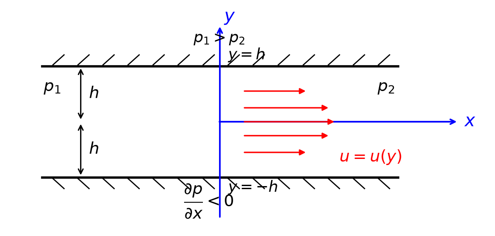
(a) Velocity field
Since the plates are infinite and the flow is fully developed, the only nonzero velocity component is in the \(x\)-direction. Therefore,
\[ u=u(y), \qquad v=w=0. \]
For this velocity field, the material acceleration is zero. The \(x\)-direction Navier–Stokes equation therefore reduces to
\[ 0 = -\frac{1}{\rho}\frac{\partial p}{\partial x} + \frac{\mu}{\rho}\frac{d^2u}{dy^2}. \]
Using
\[ \frac{\partial p}{\partial x}=-\alpha, \]
we obtain
\[ \frac{d^2u}{dy^2} = -\frac{\alpha}{\mu}. \]
Integrating once with respect to \(y\),
\[ \frac{du}{dy} = -\frac{\alpha}{\mu}y+A, \qquad A\in\mathbb{R}. \]
Integrating again,
\[ u(y) = -\frac{\alpha}{2\mu}y^2 + Ay+B, \qquad B\in\mathbb{R}. \]
The no-slip boundary conditions at the two stationary plates are
\[ u(-h)=0, \qquad u(h)=0. \]
Applying these conditions gives
\[ A=0, \qquad B=\frac{\alpha h^2}{2\mu}. \]
Therefore, the velocity distribution is
\[ u(y) = \frac{\alpha}{2\mu} \left( h^2-y^2 \right), \qquad v=w=0. \tag{23}\]
Since
\[ \alpha = -\frac{\partial p}{\partial x}, \]
the velocity may also be written as
\[ u(y) = -\frac{1}{2\mu} \frac{\partial p}{\partial x} \left( h^2-y^2 \right). \]
The velocity profile is parabolic. The maximum velocity occurs at the centreline, \(y=0\), and is
\[ u_{\max} = u(0) = \frac{\alpha h^2}{2\mu}. \tag{24}\]
The velocity vanishes at both plates:
\[ u(-h)=u(h)=0. \]
This flow is commonly known as plane Poiseuille flow.5
(b) Volume flow rate per unit width
The volume flow rate per unit width of the plates is
\[ q = \int_{-h}^{h}u(y)\,dy. \]
Substituting the velocity distribution (23),
\[ \begin{aligned} q &= \int_{-h}^{h} \frac{\alpha}{2\mu} \left( h^2-y^2 \right) \,dy \\ &= \frac{\alpha}{2\mu} \left[ h^2y-\frac{y^3}{3} \right]_{-h}^{h} \\ &= \frac{2\alpha h^3}{3\mu}. \end{aligned} \]
Hence, the volume flow rate per unit width is
\[ q = \frac{2\alpha h^3}{3\mu}. \tag{25}\]
Equivalently,
\[ q = -\frac{2h^3}{3\mu} \frac{\partial p}{\partial x}. \]
(c) Mean velocity
The mean velocity is the volume flow rate per unit width divided by the distance between the plates:
\[ \overline{u} = \frac{q}{2h}. \]
Using (25),
\[ \overline{u} = \frac{\alpha h^2}{3\mu}. \tag{26}\]
Comparing this result with the maximum velocity (24),
\[ u_{\max} = \frac{3}{2}\overline{u}. \]
Thus, for plane Poiseuille flow, the maximum velocity is \(1.5\) times the mean velocity.
Example 4: Steady Flow of a Liquid Film Down an Inclined Plane
Consider a steady, incompressible Newtonian liquid flowing down a wide plane inclined at an angle \(\theta\) to the horizontal. The liquid forms a uniform film of thickness \(h\).
Let the \(x\)-axis be directed down the plane and the \(y\)-axis be normal to the plane, with \(y=0\) at the solid surface and \(y=h\) at the free surface.
Assume that the flow is fully developed and that the pressure at the free surface is the constant atmospheric pressure \(p_0\).
Determine (a) the pressure distribution, (b) the velocity field, (c) the volume flow rate per unit width, and (d) the mean velocity.
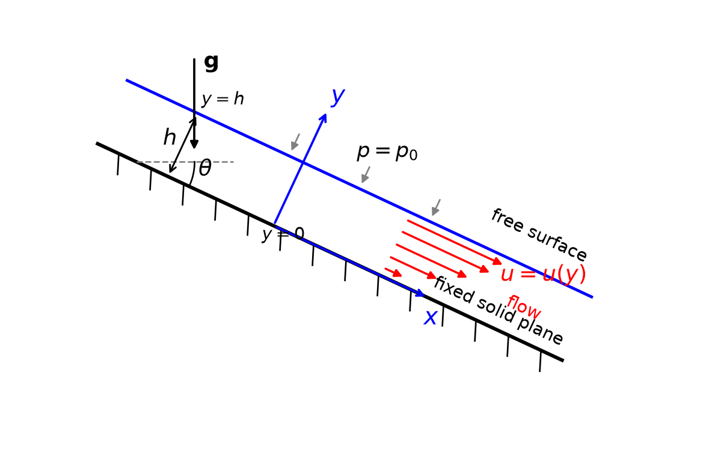
For a steady, incompressible, fully developed flow down the inclined plane,
\[ u=u(y), \qquad v=w=0. \]
The body-force components due to gravity are
\[ X=g\sin\theta, \qquad Y=-g\cos\theta, \qquad Z=0. \]
Since the velocity depends only on \(y\), all material-acceleration terms vanish.
(a) Pressure distribution
The \(y\)-direction Navier–Stokes equation is
\[ 0 = -\frac{1}{\rho}\frac{\partial p}{\partial y} -g\cos\theta. \]
Hence,
\[ \frac{\partial p}{\partial y} = -\rho g\cos\theta. \]
Integrating with respect to \(y\),
\[ p = -\rho gy\cos\theta+C. \]
At the free surface, \(y=h\), the pressure is atmospheric:
\[ p=p_0. \]
Therefore,
\[ p_0 = -\rho gh\cos\theta+C, \]
so that
\[ C = p_0+\rho gh\cos\theta. \]
Thus, the pressure distribution is
\[ \boxed{ p(y) = p_0+\rho g(h-y)\cos\theta }. \tag{27}\]
The pressure varies hydrostatically across the film thickness.
(b) Velocity field
The \(x\)-direction Navier–Stokes equation reduces to
\[ 0 = -\frac{1}{\rho}\frac{\partial p}{\partial x} + g\sin\theta + \frac{\mu}{\rho}\frac{d^2u}{dy^2}. \]
Because the film thickness is uniform and the free-surface pressure is constant,
\[ \frac{\partial p}{\partial x}=0. \]
Therefore,
\[ g\sin\theta + \frac{\mu}{\rho}\frac{d^2u}{dy^2} = 0, \]
or
\[ \frac{d^2u}{dy^2} = -\frac{\rho g\sin\theta}{\mu}. \]
Integrating once,
\[ \frac{du}{dy} = -\frac{\rho g\sin\theta}{\mu}y+A, \qquad A\in\mathbb{R}. \]
Integrating again,
\[ u(y) = -\frac{\rho g\sin\theta}{2\mu}y^2 + Ay+B, \qquad B\in\mathbb{R}. \]
At the solid surface, the no-slip condition gives
\[ u(0)=0, \]
and therefore
\[ B=0. \]
At the free surface, the shear stress is zero:
\[ \tau_{xy} = \mu\frac{du}{dy} = 0 \qquad \text{at} \qquad y=h. \]
Hence,
\[ -\rho gh\sin\theta+\mu A=0, \]
so that
\[ A = \frac{\rho gh\sin\theta}{\mu}. \]
Substituting \(A\) and \(B\) into the velocity expression gives
\[ \boxed{ u(y) = \frac{\rho g\sin\theta}{\mu} \left( hy-\frac{y^2}{2} \right) }, \qquad v=w=0. \tag{28}\]
Equivalently,
\[ u(y) = \frac{\rho g\sin\theta}{2\mu} \left( 2hy-y^2 \right). \]
The maximum velocity occurs at the free surface. Since
\[ \frac{du}{dy} = \frac{\rho g\sin\theta}{\mu}(h-y), \]
we have
\[ \frac{du}{dy}=0 \qquad \text{at} \qquad y=h. \]
Therefore,
\[ u_{\max} = u(h) = \boxed{ \frac{\rho g h^2\sin\theta}{2\mu} }. \tag{29}\]
Thus, the velocity profile is parabolic, with zero velocity at the solid surface and maximum velocity at the free surface.
(c) Volume flow rate per unit width
For a strip of unit width, the volume flow rate is
\[ q = \int_0^h u(y)\,dy. \]
Using (28),
\[ \begin{aligned} q &= \int_0^h \frac{\rho g\sin\theta}{\mu} \left( hy-\frac{y^2}{2} \right) \,dy \\ &= \frac{\rho g\sin\theta}{\mu} \left[ \frac{hy^2}{2} - \frac{y^3}{6} \right]_0^h \\ &= \frac{\rho g\sin\theta}{\mu} \left( \frac{h^3}{2} - \frac{h^3}{6} \right) \\ &= \frac{\rho g h^3\sin\theta}{3\mu}. \end{aligned} \]
Hence,
\[ \boxed{ q = \frac{\rho g h^3\sin\theta}{3\mu} }. \tag{30}\]
(d) Mean velocity
The mean velocity is the volume flow rate per unit width divided by the film thickness:
\[ \overline{u} = \frac{q}{h}. \]
Using (30),
\[ \boxed{ \overline{u} = \frac{\rho g h^2\sin\theta}{3\mu} }. \tag{31}\]
Comparing this result with (29),
\[ u_{\max} = \frac{\rho g h^2\sin\theta}{2\mu}, \qquad \overline{u} = \frac{\rho g h^2\sin\theta}{3\mu}. \]
Therefore,
\[ \boxed{ u_{\max} = \frac{3}{2}\overline{u} }. \]
Thus, the maximum velocity at the free surface is \(1.5\) times the mean velocity.
5.4 Reynolds Number and Dynamic Similarity
We now express the Navier–Stokes equations and the continuity equation in dimensionless form.
Firstly, we choose
- a characteristic velocity: \(V\)
- a characteristic length: \(L\)
For flow through a tube, the mean flow speed may be chosen as \(V\), and the tube diameter may be chosen as \(L\).
For the flow of air around an aircraft wing, the aircraft speed may be chosen as \(V\), and the wing chord length may be chosen as \(L\).
Dimensionless Variables
\[ x_i^*=\frac{x_i}{L}, \quad v_i^*=\frac{v_i}{V}, \quad t^*=\frac{Vt}{L}, \quad p^*=\frac{p}{\rho V^2}, \quad X_i^*=\frac{LX_i}{V^2}. \tag{32}\]
Dimensionless Parameter (Reynolds number)
\[ R_n = \frac{\rho LV}{\mu}. \tag{33}\]
Using these dimensionless quantities, the Navier–Stokes equations and the continuity equation become
\[ \frac{Dv_i^*}{Dt^*} = -\frac{\partial p^*}{\partial x_i^*} + X_i^* + \frac{1}{R_n}\nabla^{*2}v_i^*, \tag{34}\]
\[ \frac{\partial v_j^*}{\partial x_j^*} = 0. \tag{35}\]
Here, differential operators \(D\) and \(\nabla\) are taken with respect to the dimensionless variables.
5.4.1 Proof of the Dimensionless N-S Equations
From (34),
\[ v_i=Vv_i^*, \qquad x_j=Lx_j^*, \qquad t=\frac{L}{V}t^*. \]
The material derivative is
\[ \frac{Dv_i}{Dt} = \frac{\partial v_i}{\partial t} + v_j\frac{\partial v_i}{\partial x_j}. \]
For the time derivative,
\[ \frac{\partial v_i}{\partial t} = \frac{\partial(Vv_i^*)}{\partial t} = V\frac{\partial v_i^*}{\partial t^*} \frac{\partial t^*}{\partial t}. \]
Since
\[ t^*=\frac{Vt}{L}, \]
we have
\[ \frac{\partial t^*}{\partial t} = \frac{V}{L}. \]
Therefore,
\[ \frac{\partial v_i}{\partial t} = \frac{V^2}{L} \frac{\partial v_i^*}{\partial t^*}. \]
For the convective acceleration term,
\[ v_j\frac{\partial v_i}{\partial x_j} = Vv_j^* \frac{\partial(Vv_i^*)}{\partial x_j}. \]
Since
\[ x_j^*=\frac{x_j}{L}, \]
we have
\[ \frac{\partial}{\partial x_j} = \frac{1}{L} \frac{\partial}{\partial x_j^*}. \]
Hence,
\[ v_j\frac{\partial v_i}{\partial x_j} = \frac{V^2}{L} v_j^* \frac{\partial v_i^*}{\partial x_j^*}. \]
Thus,
\[ \frac{Dv_i}{Dt} = \frac{V^2}{L} \left( \frac{\partial v_i^*}{\partial t^*} + v_j^* \frac{\partial v_i^*}{\partial x_j^*} \right). \]
Therefore,
\[ \frac{Dv_i}{Dt} = \frac{V^2}{L} \frac{Dv_i^*}{Dt^*}. \]
The Laplacian transforms as
\[ \nabla^2v_i = \frac{\partial^2v_i}{\partial x_j\partial x_j}. \]
Using
\[ v_i=Vv_i^*, \qquad x_j=Lx_j^*, \]
we obtain
\[ \nabla^2v_i = \frac{V}{L^2} \nabla^{*2}v_i^*. \]
The pressure gradient transforms as
\[ \frac{\partial p}{\partial x_i} = \frac{\partial(\rho V^2p^*)}{\partial x_i} = \frac{\rho V^2}{L} \frac{\partial p^*}{\partial x_i^*}. \]
The body force is written as
\[ X_i = \frac{V^2}{L}X_i^*. \]
Substituting these expressions into the dimensional Navier–Stokes equation,
\[ \frac{Dv_i}{Dt} = -\frac{1}{\rho} \frac{\partial p}{\partial x_i} + X_i + \frac{\mu}{\rho}\nabla^2v_i, \]
gives
\[ \frac{V^2}{L} \frac{Dv_i^*}{Dt^*} = -\frac{V^2}{L} \frac{\partial p^*}{\partial x_i^*} + \frac{V^2}{L}X_i^* + \frac{\mu}{\rho} \frac{V}{L^2} \nabla^{*2}v_i^*. \]
Multiplying through by \(L/V^2\),
\[ \frac{Dv_i^*}{Dt^*} = -\frac{\partial p^*}{\partial x_i^*} + X_i^* + \frac{\mu}{\rho VL} \nabla^{*2}v_i^*. \]
Since
\[ R_n=\frac{\rho VL}{\mu}, \]
it follows that
\[ \frac{\mu}{\rho VL} = \frac{1}{R_n}. \]
Hence,
\[ \frac{Dv_i^*}{Dt^*} = -\frac{\partial p^*}{\partial x_i^*} + X_i^* + \frac{1}{R_n}\nabla^{*2}v_i^*. \]
Similarly, the continuity equation becomes
\[ \frac{\partial v_j^*}{\partial x_j^*} = 0. \]
The body force may be combined with the pressure term by introducing a modified dimensionless pressure
\[ \overline{p}^{\,*} = p^*-X_j^*x_j^*. \]
Then (34) becomes
\[ \frac{Dv_i^*}{Dt^*} = -\frac{\partial \overline{p}^{\,*}}{\partial x_i^*} + \frac{1}{R_n}\nabla^{*2}v_i^*. \]
The dimensionless equations are therefore completely determined by a single parameter, namely the Reynolds number.
5.4.2 Physical Interpretation
The Reynolds number expresses the ratio of inertial effects to viscous effects. In a fluid flow, inertial effects due to convective acceleration arise from terms of the order \(\rho u^2,\) whereas shear stresses arise from terms of the order \(\mu\frac{\partial u}{\partial y}.\)
The corresponding orders of magnitude are
Inertial effect: \(\rho V^2,\)
Viscous effect: \(\mu\dfrac{V}{L}\).
Therefore, the ratio of inertial effects to viscous effects is
\[ \frac{\text{inertial effect}}{\text{viscous effect}} = \frac{\rho V^2}{\mu V/L} = \frac{\rho VL}{\mu} = R_n. \]
Thus, a large Reynolds number indicates that inertial effects dominate. A small Reynolds number indicates that viscous effects dominate.
TipRemarks
Dynamic similarity
Consider two geometrically similar bodies immersed in moving fluids. The bodies have the same shape but different sizes, and their boundary conditions are identical. If the Reynolds numbers for the two flows are equal, then the dimensionless governing differential equations and boundary conditions are identical. Therefore, the dimensionless flow fields are also identical. In this sense, the Reynolds number governs dynamic similarity.Since the governing equations involve only one physical parameter, namely the Reynolds number, the qualitative behaviour of the flow depends strongly on the magnitude of the Reynolds number.
5.5 Laminar Flows and Turbulent Flows
Numerous experiments have been conducted to examine the validity of the Poiseuille-flow solution.
At a sufficiently large distance from the tube entrance, the solution is valid, and individual fluid particles follow smooth paths parallel to the axis of the tube. Such a flow is called a laminar flow.
However, if the tube is too large or the flow velocity is too high, the Poiseuille-flow solution is no longer valid. The paths of individual particles are no longer smooth and parallel to the tube axis. Instead, they become irregular, tortuous, and randomly oriented. Such a flow is called a turbulent flow.
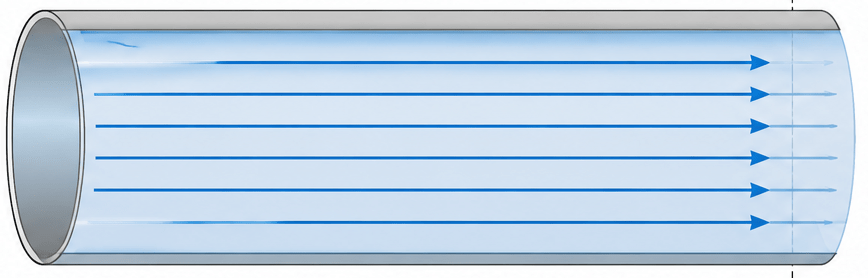
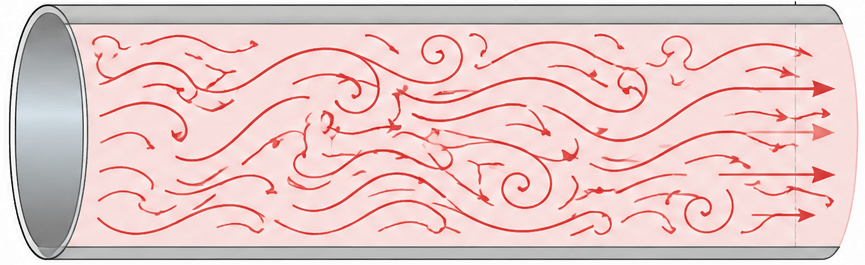
Osborne Reynolds identified the governing parameter as the Reynolds number
\[ R = \frac{\rho u_m d}{\mu}, \]
where \(u_m\) is the mean velocity, \(d\) is the tube diameter, \(\rho\) is the fluid density, and \(\mu\) is the dynamic viscosity.
The critical Reynolds number \((R_c)\) depends on the smoothness of the entry conditions and is approximately in the range \(2000 \lesssim R_c \lesssim 13000.\) When \(R>R_c,\) the flow may become turbulent.
Turbulence is one of the most important and most difficult problems in fluid mechanics. It affects quantities such as
- resistance to flow;
- heat generation and heat transfer;
- diffusion and mixing.
Turbulence is also widespread. For example, the motion of water in the ocean and the motion of air in the atmosphere are generally turbulent.
It is believed that the time-dependent, three-dimensional Navier–Stokes equations are capable of describing turbulent flows completely. However, even modern supercomputers are generally unable to solve these equations directly over all the required spatial and temporal scales for most practical problems.
Consequently, turbulent motion is often described in terms of time-averaged quantities rather than instantaneous quantities.
In practice, flows are commonly classified as steady/unsteady laminar flows and steady/unsteady turbulent flows.
Steady and unsteady laminar flows
A steady laminar flow is a flow in which, at any given point, the velocity is independent of time.
An unsteady laminar flow is a flow in which the velocity at a given point depends on time.
Laminar flow fields are determinate in the sense that they can be reproduced precisely from one experiment to another under the same conditions.
Steady and unsteady turbulent flows
Turbulent flows cannot be reproduced precisely from one experiment to another, even when all experimentally controlled factors remain unchanged.
In a turbulent flow, field variables such as velocity and pressure are random functions of time.
For turbulent flows, the terms steady and unsteady generally refer to the mean values of the flow variables.
The Navier–Stokes equations apply to both laminar and turbulent flows. However, in a turbulent flow, all velocity components must be treated as random functions of time. In general, this prevents an exact analytical solution of the Navier–Stokes equations.
5.6 Irrotational Flow
A flow is said to be irrotational if the vorticity vanishes everywhere, that is,
\[ \nabla\times\mathbf{v} = \operatorname{curl}\mathbf{v} = \mathbf{0}. \tag{36}\]
For a two-dimensional flow, the velocity field, \(\mathbf{v}=(u,v,0),\) must satisfy the irrotationality condition
\[ \frac{\partial v}{\partial x} - \frac{\partial u}{\partial y} = 0. \tag{37}\]
If the fluid is incompressible, the velocity field must also satisfy the continuity equation
\[ \frac{\partial u}{\partial x} + \frac{\partial v}{\partial y} = 0. \tag{38}\]
Let \(\phi(x,y)\) be an arbitrary scalar function and define
\[ u = \frac{\partial\phi}{\partial y}, \qquad v = -\frac{\partial\phi}{\partial x}. \tag{39}\]
Then the continuity equation is satisfied identically because
\[ \frac{\partial u}{\partial x} + \frac{\partial v}{\partial y} = \frac{\partial^2\phi}{\partial x\partial y} - \frac{\partial^2\phi}{\partial y\partial x} = 0. \]
The function \(\phi\) is called the stream function.
Substituting (39) into the irrotationality condition (37), we obtain the governing equation for the two-dimensional irrotational flow:
\[ \begin{aligned} \frac{\partial}{\partial x} \left( -\frac{\partial\phi}{\partial x} \right) - \frac{\partial}{\partial y} \left( \frac{\partial\phi}{\partial y} \right) &= 0 \\ -\frac{\partial^2\phi}{\partial x^2} - \frac{\partial^2\phi}{\partial y^2} &= 0 \\ \frac{\partial^2\phi}{\partial x^2} + \frac{\partial^2\phi}{\partial y^2} &= 0. \end{aligned} \tag{40}\]
This is Laplace’s equation, whose solution is the concern of many books on applied mathematics.
For a three-dimensional irrotational flow, the velocity field must satisfy
\[ \frac{\partial u}{\partial y} - \frac{\partial v}{\partial x} = 0, \qquad \frac{\partial v}{\partial z} - \frac{\partial w}{\partial y} = 0, \qquad \frac{\partial w}{\partial x} - \frac{\partial u}{\partial z} = 0. \tag{41}\]
These equations are satisfied identically if the velocity components are derived from a scalar potential function \(\Phi(x,y,z)\) according to
\[ u = \frac{\partial\Phi}{\partial x}, \qquad v = \frac{\partial\Phi}{\partial y}, \qquad w = \frac{\partial\Phi}{\partial z}. \tag{42}\]
The function \(\Phi\) is called the velocity potential.
If the fluid is also incompressible, then the continuity equation must hold:
\[ \frac{\partial u}{\partial x} + \frac{\partial v}{\partial y} + \frac{\partial w}{\partial z} = 0. \tag{43}\] Substituting (42) into (43) gives
\[ \frac{\partial^2\Phi}{\partial x^2} + \frac{\partial^2\Phi}{\partial y^2} + \frac{\partial^2\Phi}{\partial z^2} = 0. \tag{44}\]
Thus, the velocity potential satisfies Laplace’s equation. Since \(\Phi(x,y,z)\) is a potential function, (44) is also called the potential equation.
5.7 Bernoulli’s Equation
Bernoulli’s equation is an important consequence of the equations of motion for an inviscid fluid. It relates the pressure, velocity, and elevation of a fluid (height) particle as it moves through a flow field.
The equation may be derived directly from the Navier–Stokes equations by neglecting viscous effects.
Equations of Motion for an Inviscid Fluid
The Navier–Stokes equations for an incompressible Newtonian fluid are
\[ \rho\frac{D\mathbf{v}}{Dt} = -\nabla p + \rho\mathbf{X} + \mu\nabla^2\mathbf{v}. \tag{45}\]
For an inviscid fluid,
\[ \mu=0. \]
Consequently, the equations of motion reduce to
\[ \rho\frac{D\mathbf{v}}{Dt} = -\nabla p + \rho\mathbf{X}. \]
These equations are known as Euler’s equations of motion.
Dividing by \(\rho\), we obtain
\[ \frac{D\mathbf{v}}{Dt} = -\frac{1}{\rho}\nabla p + \mathbf{X}. \]
The material acceleration is
\[ \frac{D\mathbf{v}}{Dt} = \frac{\partial\mathbf{v}}{\partial t} + (\mathbf{v}\cdot\nabla)\mathbf{v}. \]
Therefore, Euler’s equation may be written as
\[ \frac{\partial\mathbf{v}}{\partial t} + (\mathbf{v}\cdot\nabla)\mathbf{v} = -\frac{1}{\rho}\nabla p + \mathbf{X}. \tag{46}\]
Conservative Body Forces
Suppose that the body force per unit mass is conservative. It may then be expressed as the negative gradient of a scalar potential \(\Phi\):
\[ \mathbf{X} =-\nabla\Phi. \tag{47}\]
For gravity acting vertically downward, with \(z\) measured vertically upward,
\[ \mathbf{X} = -g\mathbf{e}_z. \]
Since
\[ \nabla(gz)=g\mathbf{e}_z, \]
the gravitational body-force potential is the gravitational body-force potential is \[ \Phi=gz. \]
Thus,
\[ \mathbf{X}=-\nabla\Phi. \]
Substitution into Euler’s equation gives
\[ \frac{\partial\mathbf{v}}{\partial t} + (\mathbf{v}\cdot\nabla)\mathbf{v} = -\frac{1}{\rho}\nabla p - |-\nabla\Phi. \tag{48}\]
Useful Vector Identity
The convective acceleration may be written using the vector identity
\[ (\mathbf{v}\cdot\nabla)\mathbf{v} = \nabla\left(\frac{1}{2}\mathbf{v}\cdot\mathbf{v}\right) - \mathbf{v}\times(\nabla\times\mathbf{v}). \tag{49}\]
Since
\[ \mathbf{v}\cdot\mathbf{v}=v^2, \]
where \(v=\lVert\mathbf{v}\rVert\), (44) becomes
\[ (\mathbf{v}\cdot\nabla)\mathbf{v} = \nabla\left(\frac{v^2}{2}\right) - \mathbf{v}\times\boldsymbol{\omega}, \]
where
\[ \boldsymbol{\omega} = \nabla\times\mathbf{v} \]
is the vorticity vector.
Using this identity, Euler’s equation becomes
\[ \frac{\partial\mathbf{v}}{\partial t} + \nabla\left(\frac{v^2}{2}\right) - \mathbf{v}\times\boldsymbol{\omega} = -\frac{1}{\rho}\nabla p - \nabla\Phi. \]
Rearranging,
\[ \frac{\partial\mathbf{v}}{\partial t} - \mathbf{v}\times\boldsymbol{\omega} + \nabla\left( \frac{v^2}{2} + \Phi \right) + \frac{1}{\rho}\nabla p = \mathbf{0}. \]
If the density is constant, then
\[ \frac{1}{\rho}\nabla p = \nabla\left(\frac{p}{\rho}\right). \]
Hence,
\[ \frac{\partial\mathbf{v}}{\partial t} - \mathbf{v}\times\boldsymbol{\omega} + \nabla\left( \frac{p}{\rho} + |\frac{v^2}{2} + |\Phi \right) = \mathbf{0}. \tag{50}\]
Derivation Along a Streamline
For steady flow,
\[ \frac{\partial\mathbf{v}}{\partial t} = \mathbf{0}. \]
(50) therefore reduces to
\[ -\mathbf{v}\times\boldsymbol{\omega} + \nabla\left( \frac{p}{\rho} + \frac{v^2}{2} + \Phi \right) = \mathbf{0}. \tag{51}\]
Let \(d\mathbf{r}\) be an infinitesimal displacement along a streamline. Since the velocity is tangent to a streamline,
\[ d\mathbf{r} = \mathbf{t}\,ds, \qquad \mathbf{v} = v\mathbf{t}, \]
where \(\mathbf{t}\) is the unit tangent vector and \(s\) is distance measured along the streamline.
Take the scalar product of (51) with \(d\mathbf{r}\):
\[ -\left( \mathbf{v}\times\boldsymbol{\omega} \right)\cdot d\mathbf{r} + \nabla\left( \frac{p}{\rho} + \frac{v^2}{2} + \Phi \right)\cdot d\mathbf{r} = 0. \]
Because \(d\mathbf{r}\) is parallel to \(\mathbf{v}\),
\[ \left( \mathbf{v}\times\boldsymbol{\omega} \right)\cdot d\mathbf{r} = 0. \]
Therefore,
\[ \nabla\left( \frac{p}{\rho} + \frac{v^2}{2} + \Phi \right)\cdot d\mathbf{r} = 0. \]
Using
\[ df=\nabla f\cdot d\mathbf{r}, \]
we obtain
\[ d\left( \frac{p}{\rho} + \frac{v^2}{2} + \Phi \right) = 0. \tag{52}\]
Integration along a streamline gives
\[ \frac{p}{\rho} + \frac{v^2}{2} + \Phi = C(s), \tag{53}\]
where \(C(s)\) is constant along the streamline.
For a gravitational body force,
\[ \Phi=gz, \]
and Bernoulli’s equation along a streamline becomes
TipBernoulli’s Equation
\[ \boxed{ \frac{p}{\rho} + \frac{v^2}{2} + gz = C, } \tag{54}\]
where
- \(v\) is the fluid flow speed at a point,
- \(p\) is the static pressure at that point,
- \(z\) is the elevation of the point above a reference plane,
- \(\rho\) is the fluid density,
- \(g\) is the acceleration due to gravity, and
- \(C\) is a constant along the streamline.
Between two points \(1\) and \(2\) on the same streamline,
\[ \boxed{ \frac{p_1}{\rho} + \frac{v_1^2}{2} + gz_1 = \frac{p_2}{\rho} + \frac{v_2^2}{2} + gz_2 }. \tag{55}\]
Dividing (54) by \(g\) gives
\[ \boxed{ \frac{p}{\rho g} + \frac{v^2}{2g} + z = H }, \tag{56}\]
where \(H=C/g\) is the total head. The above equation is the Bernoulli’s Equation in head form.
The terms in this equation are interpreted as follows:
\[ \frac{p}{\rho g} = \text{pressure head}, \]
\[ \frac{v^2}{2g} = \text{velocity head}, \]
and
\[ z = \text{elevation head}. \]
Thus,
\[ \text{total head} = \text{pressure head} + \text{velocity head} + \text{elevation head}. \]
Between two points on the same streamline,
\[ \frac{p_1}{\rho g} + \frac{v_1^2}{2g} + z_1 = \frac{p_2}{\rho g} + \frac{v_2^2}{2g} + z_2. \]
Alternative Derivation in Streamline Coordinates
Consider a fluid particle moving along a streamline. Let \(s\) denote distance along the streamline and let \(v\) denote the speed of the particle.
For steady flow, the tangential component of acceleration is
\[ a_s = v\frac{dv}{ds}. \]
The pressure force per unit mass in the streamline direction is
\[ -\frac{1}{\rho}\frac{dp}{ds}, \]
and the component of gravitational acceleration in the streamline direction is
\[ -g\frac{dz}{ds}. \]
Euler’s equation in the streamline direction is therefore
\[ v\frac{dv}{ds} = -\frac{1}{\rho}\frac{dp}{ds} - g\frac{dz}{ds}. \]
Multiplying by \(ds\),
\[ v\,dv + \frac{1}{\rho}\,dp + g\,dz = 0. \]
For a fluid of constant density, integration gives
\[ \int v\,dv + \frac{1}{\rho}\int dp + g\int dz = 0. \]
Hence,
\[ \frac{v^2}{2} + \frac{p}{\rho} + gz = C, \]
which is Bernoulli’s equation.
Irrotational Flow
For irrotational flow,
\[ \boldsymbol{\omega} = \nabla\times\mathbf{v} = \mathbf{0}. \]
(49) then becomes
\[ \nabla\left( \frac{p}{\rho} + \frac{v^2}{2} + \Phi \right) = \mathbf{0}. \]
Consequently,
\[ \frac{p}{\rho} + \frac{v^2}{2} + \Phi = C \tag{57}\]
throughout the entire connected flow region.
Thus:
For a rotational flow, the Bernoulli constant may differ from one streamline to another.
For an irrotational flow, the Bernoulli constant is the same throughout the connected fluid region.
For an irrotational flow under gravity,
\[ \boxed{ \frac{p}{\rho} + \frac{v^2}{2} + gz = C } \tag{58}\]
at every point in the connected flow field.
General Barotropic Form
If the density is not constant but is a function of pressure alone,
\[ \rho=\rho(p), \]
the pressure term may be integrated as
\[ \int\frac{dp}{\rho}. \]
Bernoulli’s equation then takes the more general form
\[ \boxed{ \int\frac{dp}{\rho} + \frac{v^2}{2} + \Phi = C }. \tag{59}\]
For an incompressible fluid, \(\rho\) is constant, so
\[ \int\frac{dp}{\rho} = \frac{p}{\rho}, \]
5.7.1 Physical Interpretation
Bernoulli’s equation represents conservation of mechanical energy per unit mass of fluid.
The three terms have the dimensions of energy per unit mass:
\[ \frac{p}{\rho} = \text{pressure energy per unit mass}, \]
\[ \frac{v^2}{2} = \text{kinetic energy per unit mass}, \]
and
\[ gz = \text{gravitational potential energy per unit mass}. \]
Therefore,
\[ \frac{p}{\rho} + \frac{v^2}{2} + gz = \text{constant} \]
states that, in the absence of viscous dissipation and external energy addition or removal, the total mechanical energy of a fluid particle remains constant as it moves along a streamline.
An increase in one term must therefore be accompanied by a decrease in one or both of the other terms.
For example, if the elevation remains constant, then
\[ z_1=z_2, \]
and Bernoulli’s equation becomes
\[ \frac{p_1}{\rho} + \frac{v_1^2}{2} = \frac{p_2}{\rho} + \frac{v_2^2}{2}. \]
Therefore, an increase in speed is accompanied by a decrease in pressure.
5.7.2 Assumptions and Limitations
The form
\[ \frac{p}{\rho} + \frac{v^2}{2} + gz = C \]
is based on the following assumptions:
Steady flow
The velocity at each fixed point is independent of time:
\[ \frac{\partial\mathbf{v}}{\partial t} = \mathbf{0}. \]
Inviscid flow
Viscous stresses and viscous energy dissipation are neglected:
\[ \mu=0. \]
The equation may also be used approximately in regions of a real flow where viscous effects are negligible.
Incompressible flow
The density is constant:
\[ \rho=\text{constant}. \]
For a compressible barotropic fluid, the term \(p/\rho\) must be replaced by
\[ \int\frac{dp}{\rho}. \]
Conservative body forces
The body force must be derivable from a scalar potential:
\[ \mathbf{X} = -\nabla\Phi. \]
Gravity is the most common example.
Application along a streamline
For a rotational flow, Bernoulli’s equation applies between points on the same streamline. The constant \(C\) may vary from one streamline to another.
Irrotational-flow extension
If
\[ \nabla\times\mathbf{v} = \mathbf{0}, \]
the Bernoulli constant is the same for all streamlines in a connected flow region.
No mechanical-energy addition or removal
Between the two points under consideration, there must be no pump adding mechanical energy, no turbine removing mechanical energy, and no significant loss of mechanical energy due to friction.
Limitations
The simple Bernoulli equation should not be applied directly:
across a pump or turbine without including the associated energy transfer;
through a region with significant viscous losses;
between arbitrary streamlines in a rotational flow;
to strongly compressible flow while retaining the incompressible pressure term \(p/\rho\);
to an unsteady flow without including the appropriate unsteady contribution.
For real engineering flows, Bernoulli’s equation is often extended by adding terms representing pump head, turbine head, and head loss.
5.7.3 Applications of Bernoulli’s Equation
Bernoulli’s equation may be applied between two points lying on the same streamline:
\[ \frac{p_1}{\rho g} + \frac{v_1^2}{2g} + z_1 = \frac{p_2}{\rho g} + \frac{v_2^2}{2g} + z_2. \]
In practical applications, Bernoulli’s equation is usually used together with the continuity equation.
For steady incompressible flow through a stream tube,
\[ A_1v_1=A_2v_2=Q, \tag{60}\]
where \(Q\) is the volume flow rate.
The following subsections illustrate some applications of Bernoulli’s equation and the continuity equation.
A1: Discharge Through an Orifice: Torricelli’s Theorem
Consider a large reservoir containing an incompressible liquid. The liquid discharges through a small opening situated a vertical distance \(h\) below the free surface.
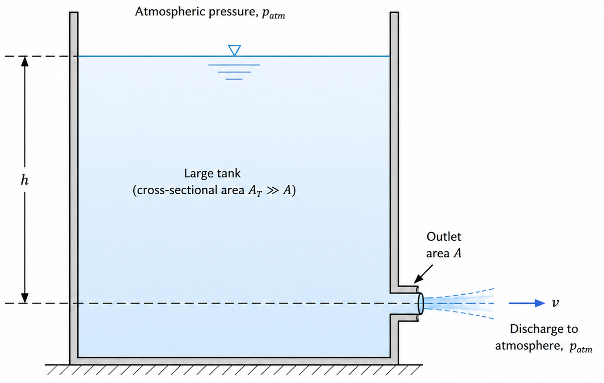
Let point \(1\) be on the free surface and point \(2\) be at the opening.
Applying Bernoulli’s equation between points \(1\) and \(2\),
\[ \frac{p_1}{\rho g} + \frac{v_1^2}{2g} + z_1 = \frac{p_2}{\rho g} + \frac{v_2^2}{2g} + z_2. \tag{61}\]
Both the free surface and the issuing jet are exposed to atmospheric pressure. Therefore,
\[ p_1=p_2=p_{\mathrm{atm}}. \]
If the reservoir cross-sectional area is very large compared with the area of the opening, the free-surface velocity is negligible:
\[ v_1\approx 0. \]
(61) therefore becomes
\[ z_1 = \frac{v_2^2}{2g} + z_2. \]
Since
\[ h=z_1-z_2, \]
we obtain
\[ \frac{v_2^2}{2g}=h. \]
Hence, the theoretical discharge velocity is
\[ \boxed{ v_2=\sqrt{2gh} }. \]
This result is known as Torricelli’s theorem.
TipTorricelli’s Theorem
Torricelli’s theorem states that the speed of efflux from a small opening is equal to the speed acquired by a body falling freely through a vertical distance \(h\). The speed \(v\) of the fluid is given by:
\[ v=\sqrt{2gh}, \] where \(h\) is the vertical distance from the free surface to the center of the opening, and \(g\) is the acceleration due to gravity (approximately \(9.81\ \mathrm{m/s^2}\)).
If the opening has area \(A_2\), the theoretical volume flow rate is
\[ Q_{\mathrm{th}} = A_2\sqrt{2gh}. \]
For a real fluid, viscous effects and contraction of the jet reduce the actual flow rate. The actual discharge is often written as
\[ Q = C_dA_2\sqrt{2gh}, \]
where \(C_d\) is the coefficient of discharge.
A2: Flow Through a Contracting Tube
Consider steady incompressible flow through a tube whose cross-sectional area changes from \(A_1\) to \(A_2\).
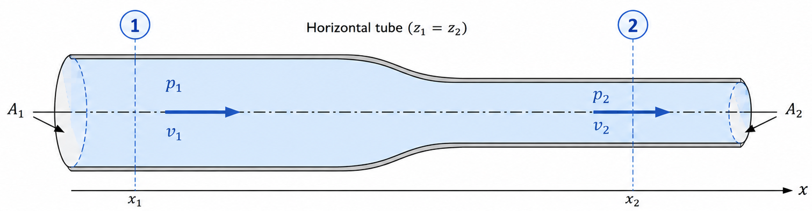
Figure 8 illustrates water flows steadily through a horizontal tube. At section \(1\), the cross-sectional area is \(A_1\), the pressure is \(p_1\), and the mean velocity is \(v_1\). At section \(2\), the cross-sectional area is \(A_2\). Determine the velocity and pressure at section \(2\).
The continuity equation gives
\[ A_1v_1=A_2v_2. \]
Therefore,
\[ v_2 = \frac{A_1}{A_2}v_1. \tag{62}\]
If
\[ A_2<A_1, \]
then
\[ v_2>v_1. \]
For a horizontal tube,
\[ z_1=z_2. \]
Bernoulli’s equation becomes
\[ \frac{p_1}{\rho} + \frac{v_1^2}{2} = \frac{p_2}{\rho} + \frac{v_2^2}{2}. \]
Therefore,
\[ p_1-p_2 = \frac{\rho}{2} \left( v_2^2-v_1^2 \right). \]
Since \(v_2>v_1\), it follows that
\[ p_2<p_1. \]
Thus, in a horizontal inviscid flow, an increase in velocity is accompanied by a decrease in pressure.
Substitution of (62) gives
\[ \boxed{ p_2 = p_1 + \frac{\rho v_1^2}{2} \left[ 1- \left( \frac{A_1}{A_2} \right)^2 \right] }. \]
If \(A_2<A_1\), then
\[ \frac{A_1}{A_2}>1 \]
and consequently
\[ p_2<p_1. \]
Thus, contraction of the flow passage causes the velocity to increase and the static pressure to decrease.
A3: The Venturi Meter
A Venturi meter is used to determine the flow rate through a pipe. It consists of a converging section, a narrow throat, and a diverging section.
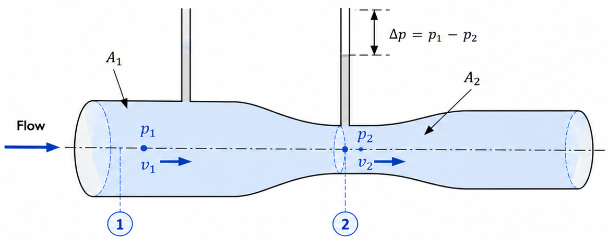
Let a horizontal Venturi meter carries an incompressible liquid of density \(\rho\). The upstream and throat areas are \(A_1\) and \(A_2\), respectively. The pressure difference is measured by a differential manometer given by
\[ \Delta p=p_1-p_2. \] where \(p_1\) is the pressure in the upstream section and \(p_2\) is the pressure in the throat.
The continuity equation is
\[ A_1v_1=A_2v_2=Q. \tag{63}\]
Hence,
\[ v_1=\frac{Q}{A_1}, \qquad v_2=\frac{Q}{A_2}. \]
For a horizontal Venturi meter, Bernoulli’s equation gives
\[ \frac{p_1}{\rho} + \frac{v_1^2}{2} = \frac{p_2}{\rho} + \frac{v_2^2}{2}. \tag{64}\]
Rearranging,
\[ p_1-p_2 = \frac{\rho}{2} \left( v_2^2-v_1^2 \right). \]
Substituting
\[ v_1=\frac{Q}{A_1}, \qquad v_2=\frac{Q}{A_2}, \]
gives
\[ p_1-p_2 = \frac{\rho Q^2}{2} \left( \frac{1}{A_2^2} - \frac{1}{A_1^2} \right). \]
Therefore,
\[ Q^2 = \frac{2(p_1-p_2)} {\rho \left( A_2^{-2}-A_1^{-2} \right)}. \]
Thus,
\[ \boxed{ Q = \sqrt{ \frac{2(p_1-p_2)} {\rho \left( A_2^{-2}-A_1^{-2} \right)} } }. \tag{65}\]
An equivalent form is obtained by simplifying the denominator:
\[ \boxed{ Q = \frac{A_1A_2} {\sqrt{A_1^2-A_2^2}} \sqrt{ \frac{2(p_1-p_2)}{\rho} } }. \tag{66}\]
Alternatively,
\[ \boxed{ Q = A_2 \sqrt{ \frac{2(p_1-p_2)} {\rho \left[ 1-\left(A_2/A_1\right)^2 \right]} } }. \tag{67}\]
For a real Venturi meter, the actual discharge is written as
\[ Q_{\mathrm{actual}} = C_d A_2 \sqrt{ \frac{2(p_1-p_2)} {\rho \left[ 1-\left(A_2/A_1\right)^2 \right]} }, \]
where \(C_d\) is the discharge coefficient.
A4: Pressure Difference Measured by a Manometer
From Figure 9, suppose the pressure difference between the two sections of a horizontal Venturi meter is measured by a differential manometer.
If the flowing fluid has density \(\rho\), the manometer liquid has density \(\rho_m\), and the difference between the manometer levels is \(h\), then
\[ p_1-p_2 = (\rho_m-\rho)gh. \tag{68}\]
Substitution into (67) gives
\[ Q = A_2 \sqrt{ \frac{ 2(\rho_m-\rho)gh }{ \rho \left[ 1-\left(A_2/A_1\right)^2 \right] } }. \tag{69}\]
Since
\[ \frac{\rho_m-\rho}{\rho} = \frac{\rho_m}{\rho}-1, \]
the result may also be written as
\[ \boxed{ Q = A_2 \sqrt{ \frac{ 2gh \left( \rho_m/\rho-1 \right) }{ 1-\left(A_2/A_1\right)^2 } } }. \tag{70}\]
A5: The Pitot Tube
A Pitot tube is used to determine the local velocity of a flowing fluid.

Consider a point \(1\) in the undisturbed flow and a stagnation point \(2\) at the entrance to the Pitot tube.
At the stagnation point,
\[ v_2=0. \]
If the two points are at the same elevation, Bernoulli’s equation gives
\[ \frac{p_1}{\rho} + \frac{v_1^2}{2} = \frac{p_2}{\rho}. \]
Therefore,
\[ p_2-p_1 = \frac{1}{2}\rho v_1^2. \tag{71}\]
The pressure \(p_1\) is the static pressure, whereas \(p_2\) is the stagnation pressure or total pressure.
Solving for the velocity,
\[ \boxed{ v_1 = \sqrt{ \frac{2(p_2-p_1)}{\rho} } }. \tag{72}\]
Thus, measurement of the difference between stagnation pressure and static pressure determines the flow speed.
If the pressure difference is measured as a head \(h\) of the same fluid, then
\[ p_2-p_1=\rho gh. \]
Consequently,
\[ \boxed{ v_1=\sqrt{2gh} }. \tag{73}\]
For a real Pitot tube, the measured velocity may be expressed as
\[ v_1 = C_p \sqrt{ \frac{2(p_2-p_1)}{\rho} }, \tag{74}\]
where \(C_p\) is the Pitot-tube coefficient.
A6: Stagnation Pressure
The stagnation pressure is the pressure that would be attained if the fluid were brought to rest isentropically and without mechanical-energy loss.
For incompressible flow at constant elevation,
\[ p_0 = p+\frac{1}{2}\rho v^2, \tag{75}\]
where \(p_0\) is the stagnation pressure.
The quantity
\[ q=\frac{1}{2}\rho v^2 \]
is called the dynamic pressure.
Thus,
\[ \boxed{ p_0=p+q }. \tag{76}\]
A7: Siphon Flow
A siphon is a tube used to transfer liquid from a reservoir at a higher level to a point at a lower level. Once the tube has been filled with liquid, gravity maintains the flow.
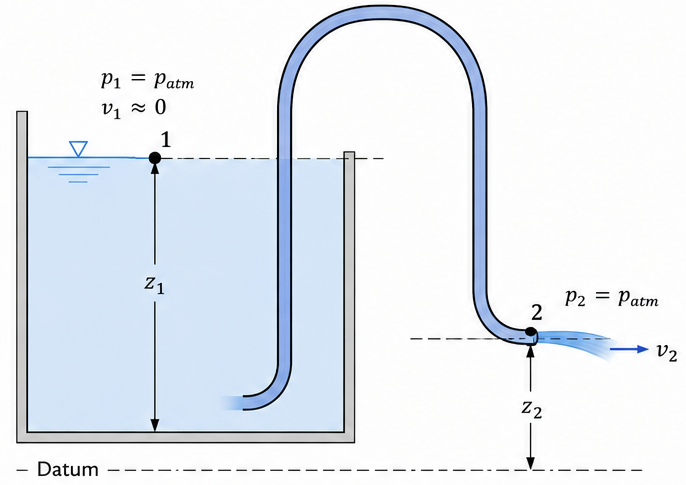
Let point \(1\) be at the free surface of the reservoir and point \(2\) be at the outlet.
Assume that:
\[ p_1=p_2=p_{\mathrm{atm}}, \]
and that the reservoir is sufficiently large for
\[ v_1\approx 0. \]
Applying Bernoulli’s equation,
\[ \frac{p_{\mathrm{atm}}}{\rho g} + z_1 = \frac{p_{\mathrm{atm}}}{\rho g} + \frac{v_2^2}{2g} + z_2. \]
Therefore,
\[ \frac{v_2^2}{2g} = z_1-z_2. \]
Hence,
\[ \boxed{ v_2 = \sqrt{ 2g(z_1-z_2) } }. \tag{77}\]
If the tube has constant cross-sectional area \(A\), then the volume flow rate is
\[ \boxed{ Q = A\sqrt{ 2g(z_1-z_2) } }. \tag{78}\]
In a real siphon, viscous head losses reduce the velocity below the value predicted by (77).
A8: Pressure at the Highest Point of a Siphon
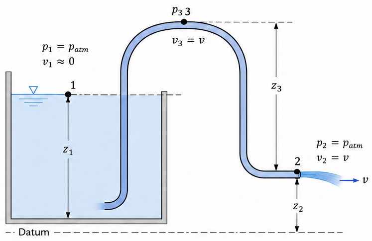
Let point \(3\) denote the highest point of the siphon. If the tube has constant cross-sectional area, then
\[ v_3=v_2=v. \]
Applying Bernoulli’s equation between the reservoir free surface and the highest point,
\[ \frac{p_{\mathrm{atm}}}{\rho g} + z_1 = \frac{p_3}{\rho g} + \frac{v^2}{2g} + z_3. \]
Therefore,
\[ \frac{p_3}{\rho g} = \frac{p_{\mathrm{atm}}}{\rho g} + z_1-z_3 - \frac{v^2}{2g}. \tag{79}\]
Using
\[ \frac{v^2}{2g}=z_1-z_2, \]
we obtain
\[ \frac{p_3}{\rho g} = \frac{p_{\mathrm{atm}}}{\rho g} + z_2-z_3. \]
Hence,
\[ \boxed{ p_3 = p_{\mathrm{atm}} - \rho g(z_3-z_2) }. \tag{80}\]
The pressure at the highest point is therefore below atmospheric pressure.
The height of the siphon is limited because the absolute pressure must remain above the vapour pressure \(p_v\) of the liquid:
\[ p_3>p_v. \tag{81}\]
If the pressure falls to the vapour pressure, vaporisation or cavitation may occur and the siphon may cease to operate properly.
Summary of Common Bernoulli Applications
The principal results are:
\[ \begin{aligned} \text{Efflux velocity:} \qquad & v=\sqrt{2gh}, \\ \text{Venturi discharge:} \qquad & Q = A_2 \sqrt{ \frac{2(p_1-p_2)} {\rho \left[ 1-(A_2/A_1)^2 \right]} }, \\ \text{Pitot-tube velocity:} \qquad & v = \sqrt{ \frac{2(p_0-p)}{\rho} }, \\ \text{Dynamic pressure:} \qquad & q = \frac{1}{2}\rho v^2, \\ \text{Stagnation pressure:} \qquad & p_0 = p+\frac{1}{2}\rho v^2. \end{aligned} \]
These expressions follow from Bernoulli’s equation together with conservation of mass and the appropriate pressure and boundary conditions.
5.7.4 Extended Bernoulli Equation for Real Flows
For real-fluid flow between sections \(1\) and \(2\), Bernoulli’s equation may be extended to include mechanical-energy addition, mechanical-energy removal, and head loss:
\[ \frac{p_1}{\rho g} + \frac{v_1^2}{2g} + z_1 + h_p = \frac{p_2}{\rho g} + \frac{v_2^2}{2g} + z_2 + h_t + h_L, \tag{82}\]
where
\[ h_p = \text{head supplied by a pump}, \]
\[ h_t = \text{head removed by a turbine}, \]
and
\[ h_L = \text{head loss caused by viscosity and fittings}. \]
The simple Bernoulli equation is recovered when
\[ h_p=h_t=h_L=0. \]
Hydrostatic pressure: The pressure exerted by a fluid at equilibrium due to the force of gravity.↩︎
Plane Couette flow: The flow of a viscous fluid between two parallel plates, one of which is moving relative to the other.↩︎
Poiseuille flow: A steady, laminar flow of a viscous fluid in a pipe↩︎
Hagen–Poiseuille law: The relationship between the pressure drop and the volume flow rate for a viscous fluid in a pipe↩︎
Plane Poiseuille flow: Pressure-driven viscous flow between two stationary parallel plates.↩︎